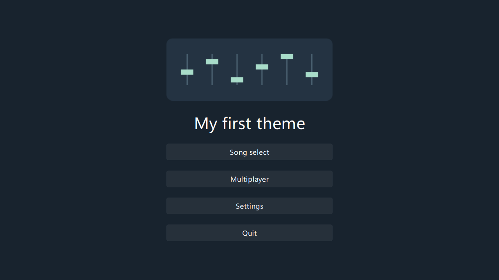

- Generated by
 1.15.0
1.15.0
|
RhythmGame 1.4.1
|
Goal: Install a main menu with an image and four working navigation buttons, then edit its title or color.
Download 01-main or open the source folder.
Close the game. Extract the download or copy docs/examples/theme-tutorial/01-main/ into your user theme directory. The game creates this directory on first launch.
| Platform | User theme directory |
|---|---|
| Windows | APPDATA%/RhythmGame/themes/ |
| Linux | ~/.local/share/RhythmGame/themes/ |
| macOS | ~/Library/Application Support/RhythmGame/themes/ |
On Linux, use $XDG_DATA_HOME instead of ~/.local/share if it is set. The game also reads themes from its installation's data directory, where the Default theme is stored.
Portable mode is enabled by portable.ini in the installation prefix, one directory above bin. In portable mode the game uses the installation's data directory and doesn't scan a separate user theme directory.
Keep the folder structure intact after extracting the download.
The game reads theme.json to find the screens a theme provides. The scripts object maps each screen to a QML file, using paths relative to the theme's folder. The first example provides only main.
The $schema URL helps a text editor check the file. It's not required. The theme's name comes from its folder name, so the example will appear as 01-main in the game.
The default theme config lists all screen names.
Open 01-main/main.qml. QtQuick supplies the basic visual objects, QtQuick.Controls.FluentWinUI3 supplies the buttons and label, and QtQuick.Layouts arranges them. RhythmGameQml supplies the game's types.
The examples import the FluentWinUI3 style explicitly to give the controls a consistent style. You can use another Qt Quick Controls style or draw your own controls.
StandardMainController handles menu actions, the bound START button and background music. It draws nothing, so the theme creates buttons whose onClicked handlers call openSelect(), openArena(), openSettings() and quit() for the four menu actions. The component is optional. You can call globalRoot.openSelect(), globalRoot.openArenaBrowser(), globalRoot.openSettings() and globalRoot.quitApplication() directly. If you replace it, keep a way for controller users to open song select. The standard component binds START to openSelect().
The image is a file in the theme's images folder, and its path is relative to main.qml. Qt's Image documentation explains image sizing, fitting and cropping.
Keep the images, fonts and sounds used by your interface in the theme folder, then copy them with the QML files when you install or publish the theme. images, fonts and sounds are useful folder names, but the game does not require a particular layout.
Use a relative URL from the QML file that uses the asset, such as images/notes.svg. To use a custom font, load its file with FontLoader.
Here is the complete screen:

Launch the game and open Settings. Under Themes, select Main Menu and choose 01-main as its theme. Leave the other screens on Default or your existing themes, then go back to see the newly selected main menu.
Click Song select or press your bound START button. The chosen selection screen should open. Multiplayer opens the configured Multiplayer screen, where you can join an Arena room. Settings opens settings, and Quit closes the game.
Edit the title or background color in main.qml, save the file, and restart the game.
Press F10 to inspect the log if the screen fails to load. log.txt is in the game's data directory, next to themes.
Resize the window to a square, a 4:3 rectangle and a wide rectangle. The menu should stay centered with all four buttons visible. The next lesson explains the sizing and adds controls you can reuse.